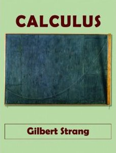

Calculus Made Easy is a book on calculus originally published in 1910 by Silvanus P. Thompson, considered a classic and elegant introduction to the subject.
From Wikipedia
I read "Calculus Made Easy" by Silvanus P. Thompson and it's still to this day my inspiration for explaining complex technical topics to lay people. It's a fantastic book, and even if you know math you must read it if you want to understand how to teach complexity to others. (source)
Thompson creates a warm, inviting environment where students will learn and grasp the true essence of calculus without any added fluff or overt technicality. (source)
-- MathBlog
Most college calculus texts weigh a ton; this one does not — it just gets to the point. This is how I learned calculus: my uncle gave me a copy. (source)

→ (or second hand from Biblio.com)



Thanks to Paula Appling, Don Bindner, Chris Curnow, Andrew D. Hwang and Project Gutenberg Online Distributed Proofreading Team for preparing the original PDF.
The theme is borrowed from Dive Into HTML5 by Mark Pilgrim released under the CC-BY-3.0 license.
Full legal notices. Github page.
Please send corrections, suggestions, and comments to nadvornik.jiri@gmail.com